Referensi Utama: Kurose & Ross — Computer Networking: A Top-Down Approach (8th Ed., Ch. 7)
Dosen Pengampu:
1. Fondasi & Tantangan Fisik Radio
2. LAN Nirkabel: IEEE 802.11 (Wi-Fi) & PAN
3. Jaringan Seluler 4G LTE & 5G NR
4. Manajemen Mobilitas & Mobile IP
5. Desain Radio, Konfigurasi AP & Simulasi
Elemen Infrastruktur, Mode Infrastructure vs Ad-Hoc, Path Loss, SNR/BER, & Skala RSSI (dBm)
3 Komponen Dasar Jaringan Nirkabel:
2 Mode Operasi Utama:
eduroam, 4G/5G).
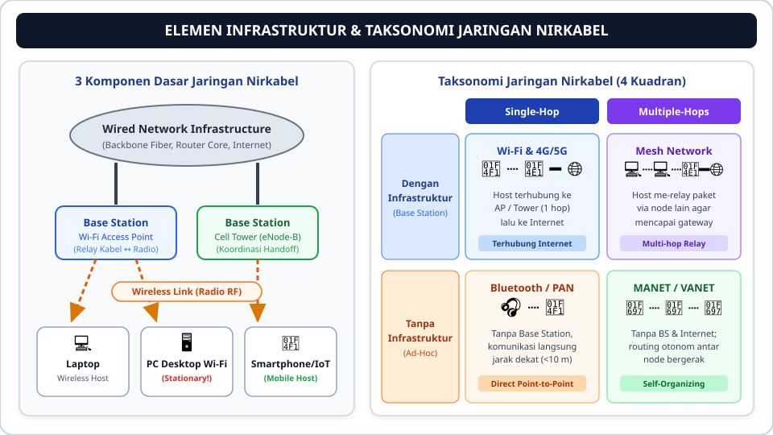
Komponen Infrastruktur & Taksonomi 4 Kuadran: Single/Multi-hop vs Infrastructure/Ad-Hoc
Melampaui konsep umum gangguan sinyal kabel (Pertemuan 3), propagasi gelombang radio menghadapi tantangan spesifik:
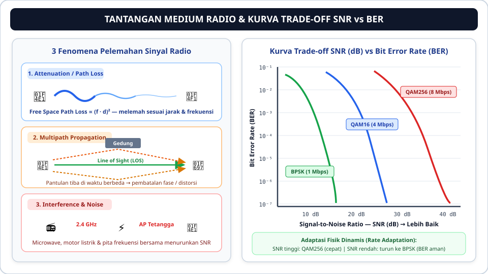
Tiga Fenomena Pelemahan Radio & Kurva Hubungan SNR vs BER
Metrik Kualitas Sinyal Radio
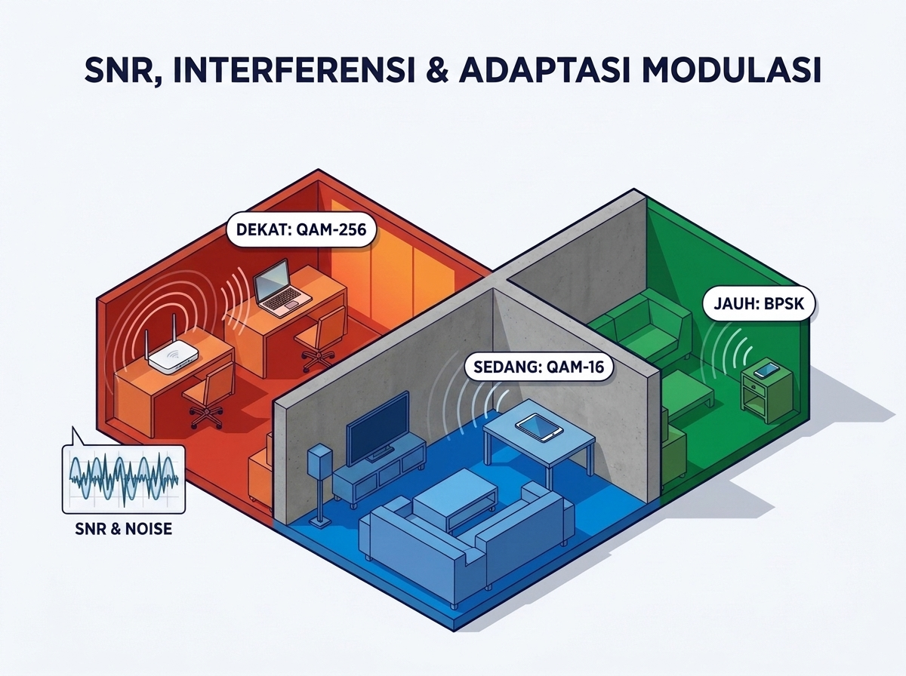
Kualitas sinyal (SNR & Noise) diukur relatif terhadap kebisingan latar & daya pancar AP.
Dynamic Rate & Modulation Adaptation
Saat klien menjauh dari AP dan SNR turun, Wi-Fi/4G otomatis menurunkan kompleksitas modulasi demi menjaga BER tetap aman:
Saat klien berpindah menembus sekat beton, modulasi otomatis diturunkan demi menjaga BER aman.
Membaca Angka Audit Wi-Fi (Tugas Praktikum 1):
-30..-50 dBm (optimal), -67 dBm (aman Zoom/VoIP),
≤-80 dBm (putus), ~-95 dBm (Noise Floor).
-62 dBm bisa tetap macet jika
Noise Floor tinggi (misal -74 dBm → SNR hanya 12 dB)!
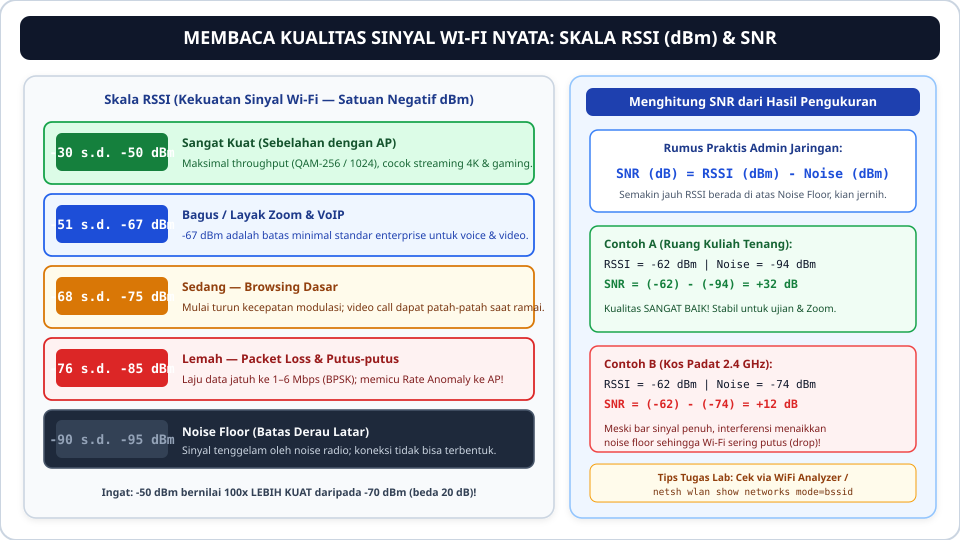
Tangga Kualitas RSSI (dBm) dan Cara Menghitung SNR dari Pengukuran Lapangan
Evolusi Wi-Fi, Arsitektur BSS/ESS, Scanning, Hidden Terminal & CSMA/CA, Rate Anomaly, serta Bluetooth
| Standar IEEE | Nama Populer | Tahun | Max Data Rate | Frekuensi | Jangkauan & Fitur Kunci |
|---|---|---|---|---|---|
| 802.11b / g | Wi-Fi 1 / 3 | 1999–2003 | 11 – 54 Mbps | 2.4 GHz | ~30 m indoor; pelopor Wi-Fi massal (DSSS → OFDM) |
| 802.11n | Wi-Fi 4 | 2009 | 600 Mbps | 2.4 / 5 GHz | ~70 m indoor; memperkenalkan MIMO multi-antena |
| 802.11ac | Wi-Fi 5 | 2013 | 3.47 Gbps | 5 GHz | ~70 m; kanal lebar 80/160 MHz & MU-MIMO downlink |
| 802.11ax | Wi-Fi 6 / 6E | 2020 | 9.6 – 14 Gbps | 2.4 / 5 / 6 GHz | ~70 m; OFDMA efisiensi area padat + Target Wake Time |
| 802.11be | Wi-Fi 7 | 2024 | Hingga 46 Gbps | 2.4 / 5 / 6 GHz | Kanal 320 MHz + Multi-Link Operation (MLO) |
| 802.11ah | Wi-Fi HaLow | 2017 | 347 Mbps | 900 MHz | ~1 km outdoor; hemat daya untuk sensor IoT jarak jauh |
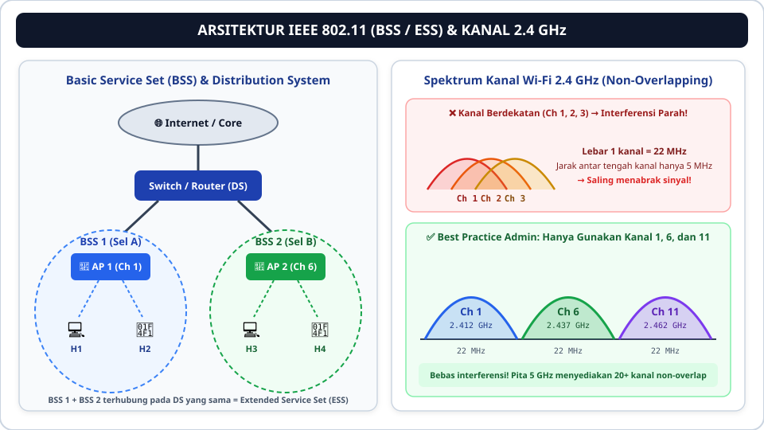
Topologi BSS/ESS Terhubung Switch & Spektrum Non-Overlapping Kanal 1, 6, 11
SSID) dan alamat MAC AP (BSSID).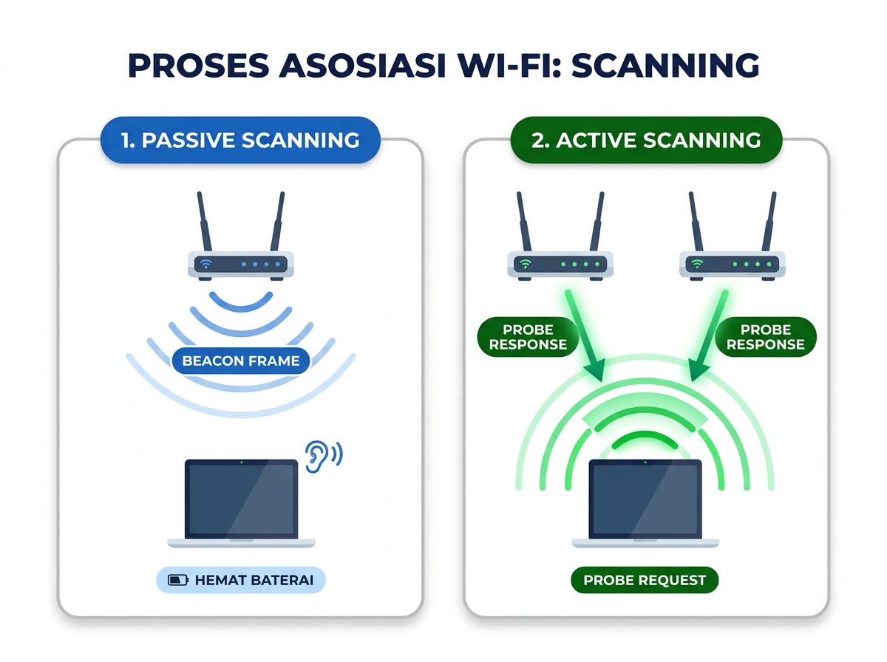
Klien cukup menyimak Beacon Frame periodik dari Access Point untuk menghemat baterai.
ITERA-WiFi di kanal ini?"Host proaktif menyiarkan Probe Request untuk penemuan cepat & mendeteksi Hidden SSID.
Mengapa CSMA/CD Kabel (Pertemuan 4) Gagal di Wi-Fi?
Mekanisme CSMA/CA (Collision Avoidance):
ACK setelah jeda singkat
SIFS (jika gagal, CW × 2).
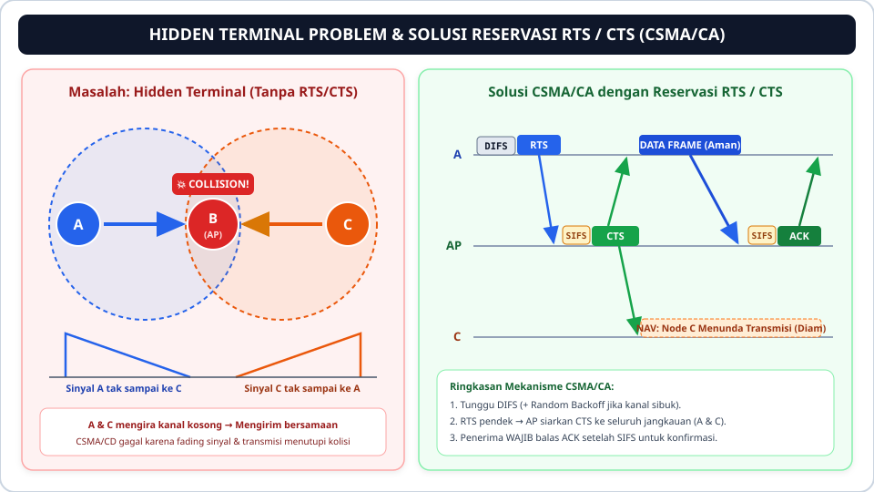
Masalah Hidden Terminal & Alur Timing DIFS, RTS, CTS, Data, SIFS, dan ACK
Mekanisme Reservasi Saluran RTS / CTS
ACK
dari AP.Anatomi 4 Alamat MAC Frame 802.11
Mengapa frame Wi-Fi punya 4 alamat MAC (sedangkan Ethernet P04 cuma punya 2)?
Bayangkan 1 Access Point melayani dua klien bersamaan: Laptop A dekat AP (54 Mbps) dan HP B jauh di ujung gedung (turun ke 1 Mbps akibat Rate Adaptation):
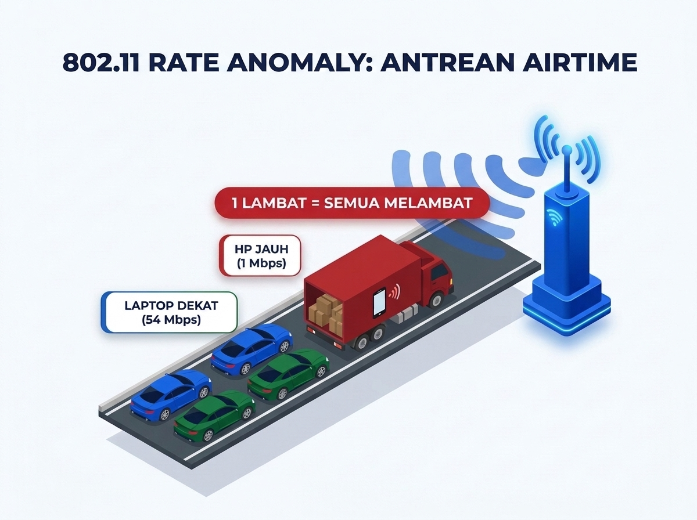
Satu perangkat bersinyal lemah (1 Mbps) menyita waktu udara ~54× lebih lama & menahan seluruh klien.
Pada Pertemuan 5, TCP mengasumsikan setiap kehilangan paket berasal dari antrean router yang penuh (Congestion). Di jaringan nirkabel, asumsi ini sering keliru:
ARQ/ACK cepat mencoba
ulang di Layer 2 sebelum TCP sadar, serta algoritma modern seperti TCP
BBR & Airtime Fairness pada AP!
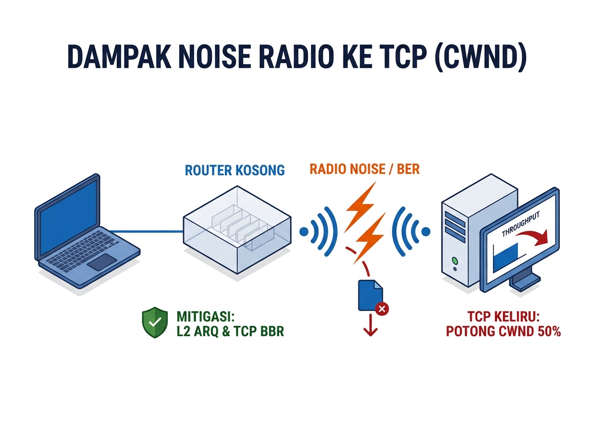
TCP mengira packet loss akibat noise radio adalah kongesti router, lalu memangkas cwnd 50%.
Karakteristik & Topologi Piconet
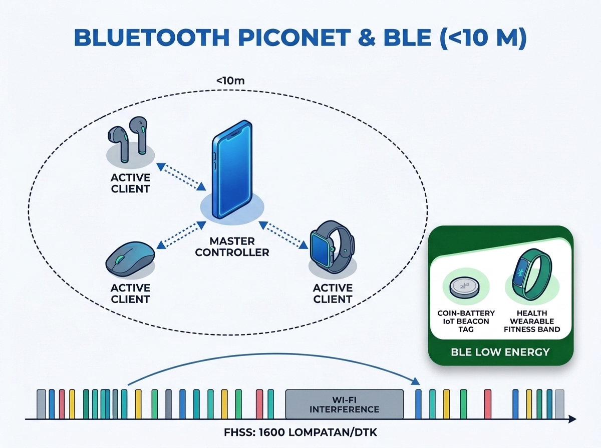
1 Master mengoordinasikan hingga 7 Active Client lewat polling TDM + lompatan kanal FHSS.
Bluetooth Low Energy (BLE) & Efisiensi
BLE menghemat daya baterai koin untuk sensor IoT, wearable, dan siaran ephemeral ID.
Arsitektur Radio Access Network, Core EPC All-IP, OFDM Multiplexing & Evolusi 5G
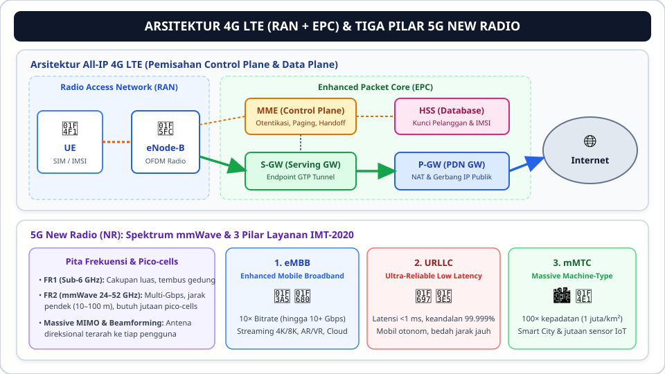
Pemisahan Control/Data Plane pada 4G EPC & Tiga Pilar Layanan 5G IMT-2020
Multiplexing Seluler: OFDM (4G/5G)
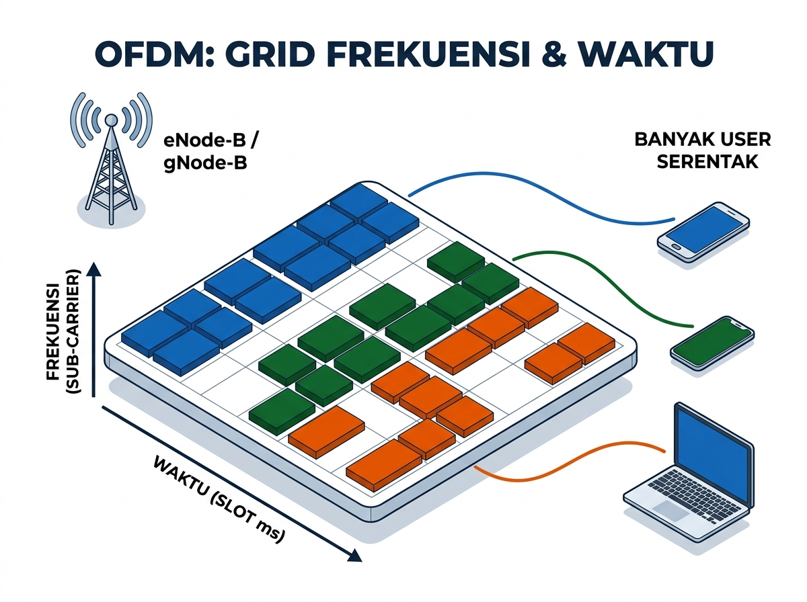
eNode-B/gNode-B mengalokasikan blok sub-carrier & slot milidetik secara dinamis ke banyak user.
Visi & Arsitektur 5G New Radio (NR)
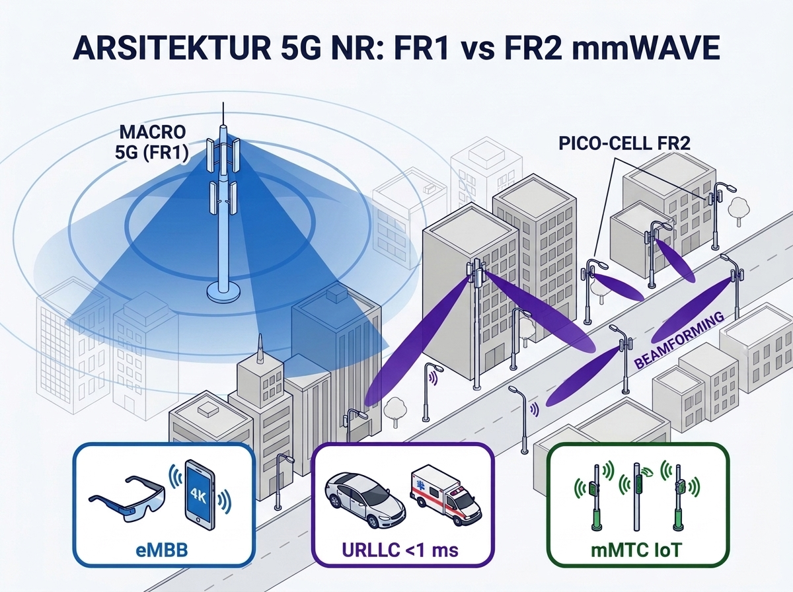
Kombinasi cakupan luas FR1 dan pico-cell mmWave FR2 ber-Beamforming menopang eMBB, URLLC, & mMTC.
Tantangan Roaming IP, Indirect vs Direct Routing, Mobile IP (HA/FA/CoA), Handoff & GTP Tunneling
Mengapa Mobilitas Sulit di Layer-3 (IP)?
/32 miliaran ponsel via BGP global
setiap detik (tabel routing Internet meledak).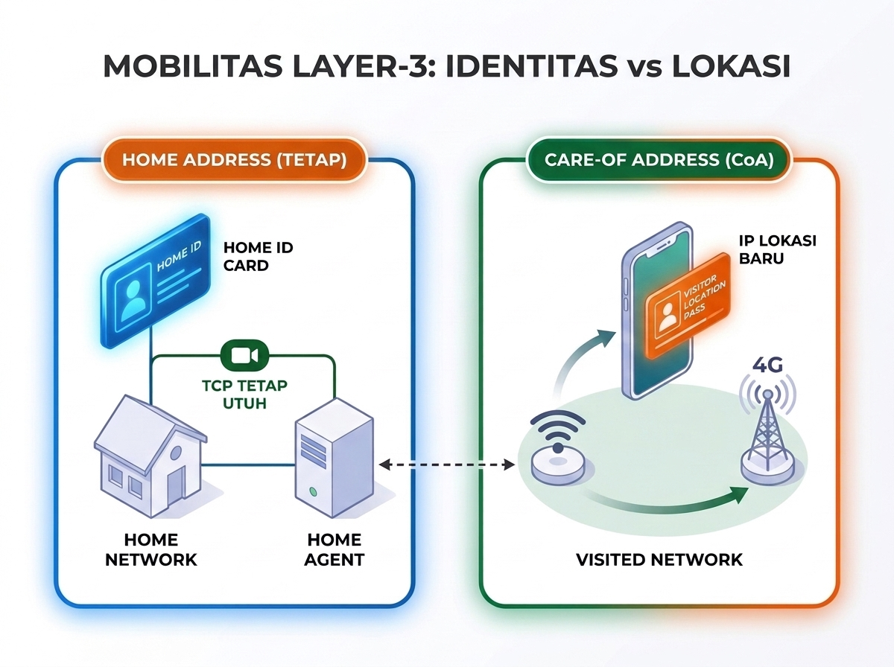
Identitas permanen (Home Address) harus dijaga agar koneksi TCP 4-tuple tidak putus saat berpindah.
4 Istilah Kunci Arsitektur Mobilitas
Pemisahan alamat identitas (Home Address) dari alamat rute lokasi baru (Care-of Address).
1. Indirect Routing (Via Home Gateway)
2. Direct Routing (Optimal Path)
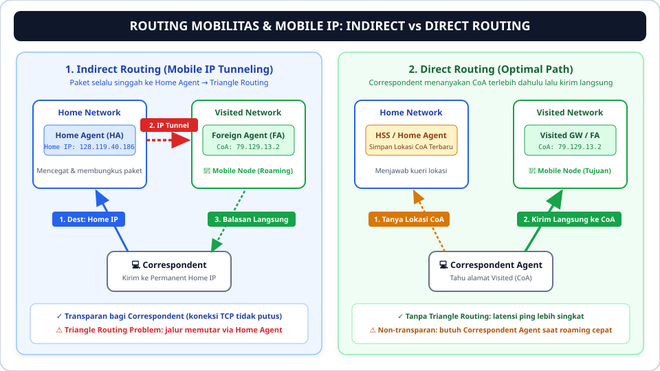
Komparasi Alur Paket Indirect Routing (Tunneling & Triangle Routing) vs Direct Routing
Implementasi Entitas Mobile IP (IPv4/IPv6)
Home Addr ↔ CoA serta menjalankan IP-in-IP
Encapsulation.
3 Fase Siklus Operasional Mobile IP
Home Address → CoA diperbarui.
Control Plane & GTP Data-Plane Tunnel
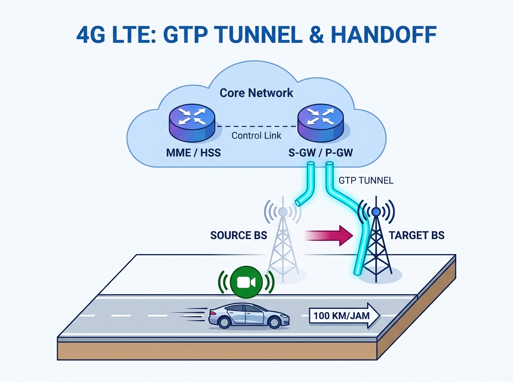
MME/HSS menangani pensinyalan kontrol sementara S-GW/P-GW memelihara terowongan data GTP.
Proses Handoff Antar-Menara (eNode-B)
Ujung tunnel GTP berpindah mulus ke Target BS dalam puluhan milidetik tanpa mengganti IP UE.
Perencanaan Multi-AP (CCI/ACI/5 GHz), Parameter & Panduan Setup AP Lab, 2 Simulasi Auto-Step & Tugas
-67 dBm dan jangan menyetel TX Power 100% agar HP mau pindah ke AP
terdekat!
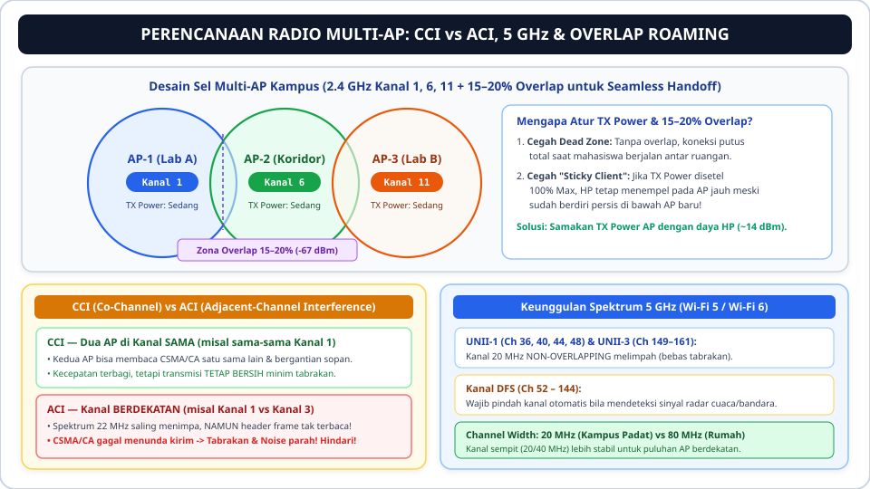
Pola Sel Multi-AP Kampus, Perbandingan CCI vs ACI, & Kanal 5 GHz
4 Parameter Wajib Saat Mengonfigurasi AP:
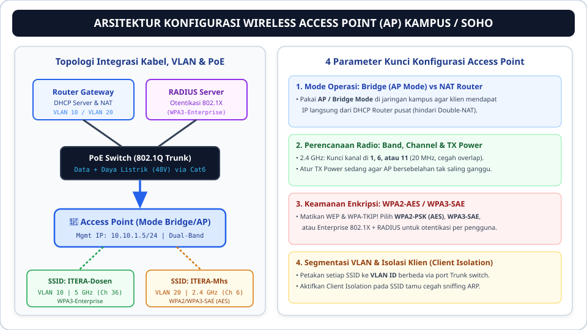
Topologi Integrasi PoE Switch, Trunk VLAN, RADIUS, & 4 Parameter Konfigurasi AP
192.168.10.2/24 agar tidak bentrok dengan gateway router
.1).
Disabled.AP-A = Ch 1,
AP-B = Ch 6, & WPA2-PSK AES.
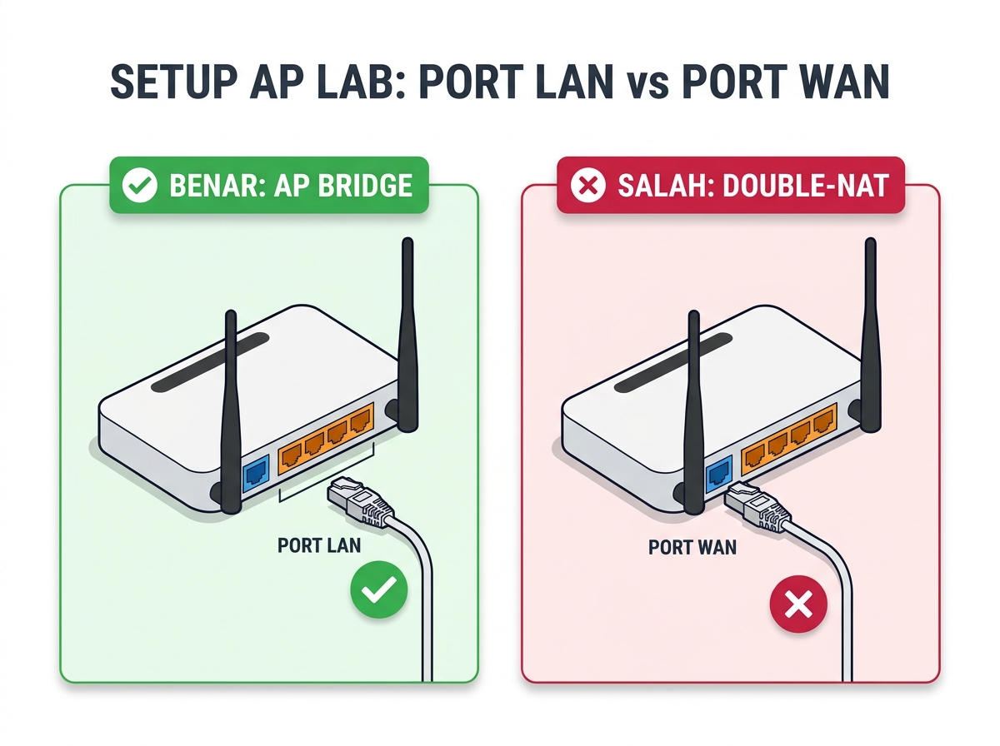
Gunakan Port LAN + matikan DHCP internal agar Wireless Router bertindak sebagai AP Bridge murni.
Salah mencolok uplink ke Port WAN memecah subnet (Double-NAT) dan memblokir akses LAN lokal.
79.129.13.2).
Pilih mode routing lalu klik Kirim...128.119.40.186 ↔ 79.129.13.2
| Aspek Evaluasi | Bluetooth (802.15.1 / BLE) | Wi-Fi (IEEE 802.11) | 4G LTE Seluler | 5G New Radio (NR) |
|---|---|---|---|---|
| Skala & Jangkauan | PAN (< 10 m) | LAN (30 – 70 m indoor) | WAN (4 – 15 km makro) | Pico (10–100 m) / Makro km |
| Protokol Akses / Mux | Polling Master + FHSS | CSMA/CA (+ RTS/CTS) | OFDM (FDM + TDM) | OFDM Fleksibel + Beamforming |
| Kecepatan Maksimal | 2 – 3 Mbps | 11 Mbps – 46 Gbps (Wi-Fi 7) | 100+ Mbps – 1 Gbps | 10 – 20 Gbps (mmWave) |
| Manajemen Mobilitas | Terbatas satu Piconet | Handoff antar-AP (1 ESS) | Handoff penuh + GTP + MME/HSS | Ultra-dense handoff + SDN Core |
| Keunggulan Utama | Sangat hemat daya, tanpa AP | Spektrum gratis, murah & cepat | Cakupan luas & mobilitas tinggi | Latensi <1 ms, massive IoT & eMBB |
Lakukan audit spektrum Wi-Fi riil, perancangan konfigurasi Access Point di simulator jaringan, dan analisis mekanisme Mobile IP berikut:
1. Audit Kanal & Sinyal Wi-Fi Lingkungan Nyata:
Jalankan utilitas pemindai nirkabel (seperti WiFi Analyzer /
netsh wlan show networks mode=bssid / Wireshark) di sekitar kampus atau kos.
Catat SSID, BSSID MAC, pita frekuensi (2.4/5 GHz), nomor kanal, RSSI (dBm), serta
identifikasi apakah ada tumpang tindih di luar kanal 1, 6, 11.
2. Simulasi Infrastruktur Access Point (Cisco Packet
Tracer): Bangun topologi terdiri atas 1 Router Gateway, 1 Switch, 2 Access
Point (AP-A Kanal 1, AP-B Kanal 6), dan minimal 4 perangkat
nirkabel (Laptop/Smartphone) dengan SSID berbeda dan pengalamatan IP otomatis dari DHCP
Server Router.
3. Pengamanan Wireless & Pengujian Handoff:
Konfigurasikan keamanan enkripsi WPA2-PSK (AES) pada kedua AP. Lakukan uji
konektivitas (Ping) ke Router serta simulasi perpindahan klien dari jangkauan
AP-A menuju AP-B.
4. Analisis Teoretis CSMA/CA & Hidden Terminal:
Jelaskan secara teknis bagaimana mekanisme DIFS, RTS/CTS,
NAV, dan ACK menyelamatkan transmisi saat dua klien tidak saling
mendengar di jaringan Wi-Fi yang Anda bangun.
5. Studi Kasus Mobile IP & 4G LTE: Gambarkan alur paket saat host berpindah ke Visited Network menggunakan Indirect Routing (Home Agent, Foreign Agent, Care-of Address) serta jelaskan fungsi Triangle Routing dibanding Direct Routing.
6. Penyusunan Laporan Praktikum: Susun seluruh hasil pengukuran, tangkapan layar konfigurasi AP & bukti ping pada Packet Tracer, serta analisis kritis ke dalam laporan berstandar template A4 margin 3 cm.
Pertemuan berikutnya: Pertemuan 15: Studi Kasus & Tren Jaringan (SOHO, IoT, Edge Device & SDN)
Persiapkan pemahaman mengenai desain jaringan kantor kecil/rumah (SOHO), ekosistem Internet of Things (IoT) & Edge Computing, pemisahan control-data plane pada Software-Defined Networking (SDN), serta isu etika dan privasi data.
Program Studi Teknik Informatika - Institut Teknologi Sumatera (ITERA)